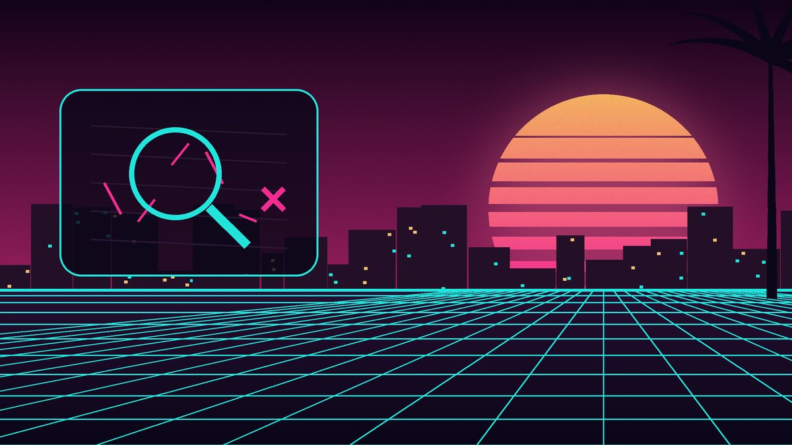

Coleccionables de GTA 6: cuántos hay, cuántos hacen falta para el 100 % y qué trofeos dan
GTA 6 mete cerca de 3.000 coleccionables y actividades en Leonida, pero el 100 % solo te pide una parte. Esto es lo que cuenta de verdad, según varias guías que ya han repasado el juego a fondo.
Por Redacción Golpe Diario · Publicado el

Qué ha pasado
El contador de progreso de GTA 6 (el «Progress Database» del menú) llega a unas 3.000 entradas en total, según las guías de Playnius y GTA6Locations. Pero para el trofeo de oro del 100 %, llamado «A Long Road» según recoge Promptowy, no hace falta rascar todo eso: solo se exige una parte de cada tipo de coleccionable.
El bloque más grande son los cromos: 480 cartas repartidas en 18 colecciones distintas, con sets que van de 12 a 36 cartas cada uno, según la guía de 6cheats. Para el 100 % bastan 15 de esos 18 sets, es decir, 372 cartas como mínimo; los otros tres sets puedes dejarlos sin tocar y el juego los sigue contando como completos a efectos del trofeo final. Completar solo 3 sets cualquiera, aunque sea de los que luego no vas a acabar, ya desbloquea un trofeo propio, «Don't Touch My Deck», según la misma guía.
Otros coleccionables con cifra concreta, según las guías de Playnius y TheTechBasket, que coinciden en los números: 125 flamencos de hormigón con cocaína dentro, de los que hacen falta 100; 397 acrobacias (saltos, rampas y vuelos) repartidas por el mapa, de las que se piden 300; 255 animales para estudiar con la app WAiNK, de los que bastan 100; 34 revistas, libros y cómics, de los que se necesitan 30; y 18 puntos de meditación, de los que hacen falta 15. Los 33 tesoros de los pecios submarinos, en cambio, no dan margen: hay que encontrar los 33 para que cuenten en el 100 %.
Cada colección de cartas tiene además su propia gracia al completarla. Por ejemplo, la guía de Vandal explica que terminar el set «Vice City Flamingos», con 24 cromos de jugadores de béisbol, desbloquea un truco que tiñe todo el mundo de morado y amarillo; no cambia nada de la partida, es solo un filtro de color para la cámara.
Lo que de verdad importa para no frustrarse: según las guías de Playnius y TheTechBasket, en GTA 6 ningún coleccionable se pierde para siempre de cara al 100 %. El Progress Database queda abierto después de los créditos, en modo libre, así que no hay prisa por rematarlo todo antes de terminar la historia.
Qué significa para ti
- No necesitas los 18 sets de cartas: con 15 de 18 (372 cartas) te vale para el 100 %, según 6cheats. Elige de entrada los tres sets que más te cuesten y déjalos para el final o ni los toques.
- Para el trofeo «Don't Touch My Deck» solo hace falta rematar 3 sets cualquiera, así que puedes conseguirlo pronto sin planear nada.
- Los pecios submarinos no perdonan: son 33 de 33. Mételos en tu ruta de coleccionables desde el principio para no dejarlos para el final.
- Si quieres el filtro morado y amarillo de cámara, busca el set «Vice City Flamingos» (24 cartas de béisbol) y complétalo entero, según Vandal.
- No hace falta correr durante la historia: todo lo que falte para el 100 % se puede seguir recogiendo en modo libre después de los créditos, según Playnius y TheTechBasket.
Lo tienes también en la guía: Misiones de la historia de GTA 6: capítulo a capítulo y sin destripes · Actividades y coleccionables de GTA 6: qué hay, qué dan y cómo sacarlos sin perder horas · Actividades y coleccionables de GTA 6: qué hay, qué dan y cómo sacarlos sin perder horas · Propiedades y negocios en GTA 6: qué se puede comprar y qué conviene · Trofeos y logros de GTA 6: el platino, el único trofeo que podrías perder y el orden para sacarlos todos · Trofeos y logros de GTA 6: el platino, el único trofeo que podrías perder y el orden para sacarlos todos
Contrastado con: Playnius · TheTechBasket · 6cheats · Vandal · Promptowy · GTA6Locations
Sigue leyendo
Rockstar mapeó toda la red de suministro de las pandillas de Leonida, aunque solo veas trozos sueltos
Un director de diseño de Rockstar ha contado a IGN que el reparto de droga entre las bandas de GTA 6 está pensado de principio a fin, aunque el juego solo deje ver fragmentos de esa cadena.
El mapa de fans que señala todos los coleccionables de GTA 6 (y por qué conviene usarlo con cuidado)
La comunidad de GTABase ha montado un mapa interactivo con cada coleccionable y punto de interés de Leonida. Es muy útil para el 100 %, pero también enseña cosas que todavía no has vivido en la historia.
El Joker de Florida amenazó con demandar a Rockstar, y ahora está en los créditos de GTA 6
Lawrence Sullivan, el internauta viral por su ficha policial de 2017, llegó a pedir 10 millones de dólares a Rockstar por un plano del tráiler. Hoy aparece acreditado como voz de la población de Leonida, y los mismos créditos nombran también a los empleados que la compañía despidió.